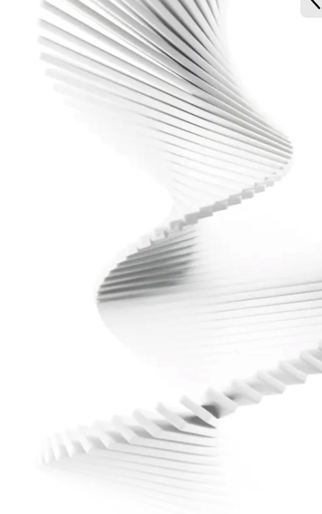

The architecture of new success
AIR
Scroll to explore

THREE TOWERS RANGING FROM 14 TO 34 FLOORS REFLECT THE DYNAMIC CHARACTER OF OFFICE LIFE THROUGH THEIR EXPRESSIVE FORMS. THEY SYMBOLIZE ONE OF THE CAPITAL’S KEY BUSINESS DISTRICTS
THE SMOOTH ROTATION OF THE FACADES AROUND A CENTRAL AXIS ADDS MOVEMENT AND ENERGY TO THE OVERALL SILHOUETTE. THE ROTATIONAL EFFECT CREATES A DISTINCTIVE ARCHITECTURAL RHYTHM.
A New Premium Format
Air is not only a new generation of offices but also a strong architectural statement by ADM Architects.